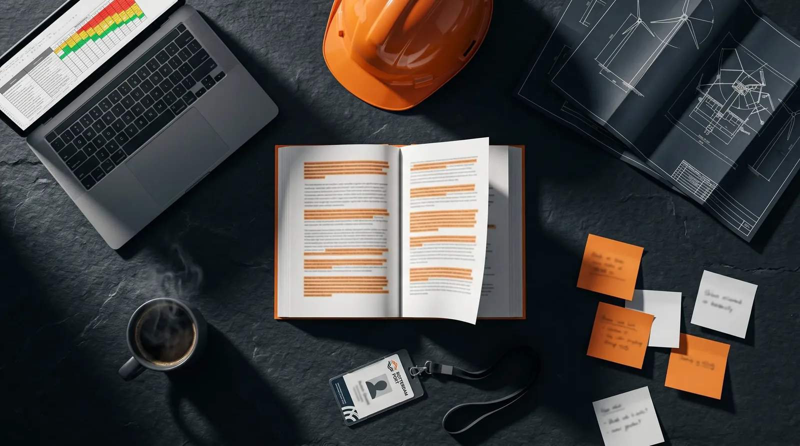

NEBOSH heeft het IGC volledig herzien voor 2026. Nieuw syllabus, nieuwe examenvorm, nieuwe beoordelingssystematiek. Voor Nederlandse veiligheidskundigen die NEBOSH overwegen of er al mee bezig zijn: dit is wat er verandert — en wat het concreet voor jou betekent.
Wat is er veranderd?
De herziening van 2026 raakt zowel de naamgeving als de inhoud en de manier waarop je wordt beoordeeld. De belangrijkste wijzigingen op een rij:
- De oude namen IG1 en IG2 worden vervangen door GIC1 en GIC2.
- IG1 was een 2-uurs schriftelijk examen — GIC1 is nu een open-book examen van 24 uur.
- IG2 gaf alleen "Met" of "Not Met" — GIC2 geeft nu een gedetailleerde puntenscore per onderdeel (gevaaridentificatie, risicobeoordeling, aanbevelingen).
- De deadline voor het oude syllabus: 6 augustus 2026 is de laatste examendatum voor IG1 en IG2.
| Onderdeel | Oud (IG1/IG2) | Nieuw (GIC1/GIC2) |
|---|---|---|
| Naam | IG1 / IG2 | GIC1 / GIC2 |
| Theorie-examen | 2 uur schriftelijk | 24 uur open-book |
| Beoordeling praktijk | Met / Not Met | Puntenscore per onderdeel |
| Laatste examendatum oud | 6 augustus 2026 | Daarna alleen nog GIC |
GIC1 — het open-book examen
GIC1 is de grootste verandering. Het schriftelijke examen van twee uur maakt plaats voor een open-book examen waar je veel meer tijd voor krijgt en al je materiaal mag gebruiken.
- Je hebt 24 uur de tijd om het examen te maken.
- Je mag al je studiemateriaal gebruiken.
- De vragen zijn scenario-gebaseerd — je moet redeneren, niet stampen.
- Na het examen kan een korte verificatie-interview volgen (2-3 vragen).
- Het eindcijfer is gebaseerd op GIC1 (Pass / Credit / Distinction).
Oefen alvast met onze gratis IG1 oefenvragen — de stof sluit direct aan op het nieuwe GIC1 examen.
Belangrijk: open-book betekent niet dat het examen makkelijker is. Juist omdat je alles mag opzoeken, toetsen de vragen of je de stof écht begrijpt en kunt toepassen op een realistische werksituatie.
GIC2 — de praktijkopdracht
GIC2 vervangt IG2 en blijft een praktijkopdracht, maar de manier van beoordelen verandert ingrijpend.
- Je maakt een risicobeoordeling van je eigen werkplek.
- Nieuw: je krijgt een gedetailleerde score per onderdeel.
- Beide units (GIC1 én GIC2) moeten gehaald worden voor het certificaat.
- GIC2 telt niet mee voor het eindcijfer, maar is wel verplicht.
Wil je je nu al verdiepen in de praktijkopdracht? Bekijk onze uitleg over de NEBOSH praktijkopdracht (risk assessment).
Wat als je nog bezig bent met het oude systeem?
Zit je midden in het oude traject? Dan hangt het van je situatie af wat je moet doen.
- Heb je IG1 al gehaald? Dan moet IG2 vóór 6 augustus 2026 afgerond zijn.
- Ben je nog niet begonnen? Dan start je direct met het nieuwe GIC1/GIC2 systeem.
- Twijfel je? Neem contact op met SafetyXAcademy — we kijken samen naar je beste route.
Wat betekent dit voor jou als Nederlandse veiligheidskundige?
De herziening pakt voor de meeste Nederlandstalige HSE'ers positief uit, mits je je goed voorbereidt.
- Het nieuwe systeem is eerlijker: je kunt zwakkere onderdelen compenseren met sterkere.
- Open-book betekent niet makkelijker — de vragen vereisen inzicht en eigen redenering.
- Nederlandstalige begeleiding bij SafetyXAcademy helpt je de Engelse examenstof echt te begrijpen, niet alleen te memoriseren.
Bekijk ook welke HSE ZZP-opdrachten en jobs beschikbaar zijn na je NEBOSH diploma — in havens, offshore en industrie.
Juist bij een open-book examen met scenario-vragen is het verschil tussen "de woorden kennen" en "de stof begrijpen" doorslaggevend. Daarom werken we in de NEBOSH IGC-opleiding met Nederlandstalige uitleg bij de Engelse examenstof.

Veelgestelde vragen
Is het nieuwe NEBOSH IGC moeilijker dan het oude?
Niet per se moeilijker, maar anders. De nadruk ligt meer op redeneren en toepassen dan op feiten reproduceren. Het open-book examen geeft meer ruimte, maar de scenario-vragen vereisen echt begrip.
Kan ik nog starten met het oude IG1/IG2 systeem?
Alleen als je vóór 6 augustus 2026 examen doet. Daarna geldt alleen nog het nieuwe GIC1/GIC2 systeem.
Wat is het verschil tussen GIC1 en GIC2?
GIC1 is het theoretische open-book examen (24 uur). GIC2 is de praktijkopdracht waarbij je een risicobeoordeling maakt van je eigen werkplek.
Telt GIC2 mee voor mijn eindcijfer?
Nee. Je eindcijfer (Pass, Credit of Distinction) wordt bepaald door GIC1. GIC2 moet wel gehaald worden — zonder GIC2 geen certificaat.
Wanneer start de volgende NEBOSH IGC opleiding bij SafetyXAcademy?
De volgende groep start in september 2026. Aanmelden kan via de website.
Nog niet zeker of NEBOSH bij je past? Doe eerst de gratis NEBOSH oefentest — 20 vragen, 15 minuten.
Klaar voor het nieuwe NEBOSH IGC? Nederlandse begeleiding, internationaal erkend certificaat.
Laatst bijgewerkt: 23 juni 2026. Examenvorm, data en beoordeling zijn gebaseerd op de NEBOSH-herziening 2026; raadpleeg SafetyXAcademy of NEBOSH voor de meest actuele details rond jouw situatie.